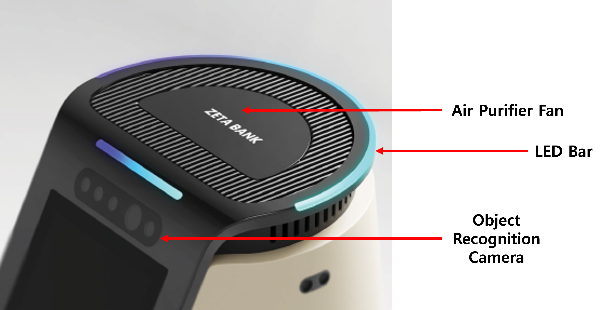
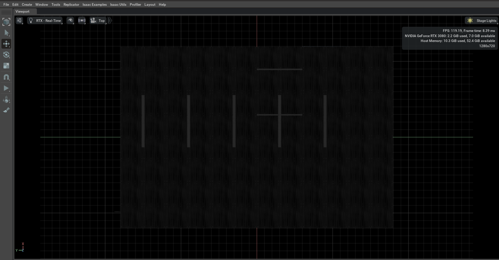
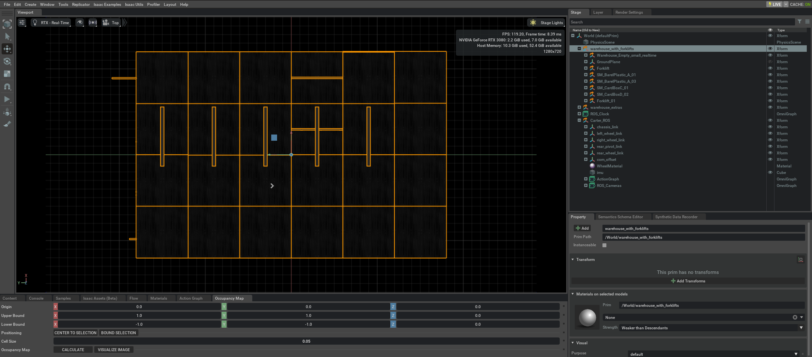
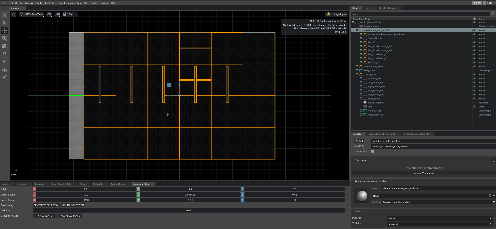
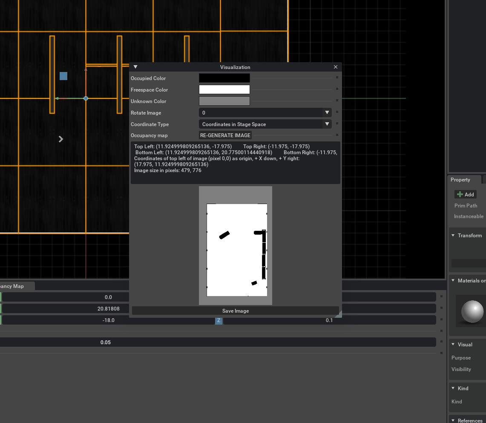
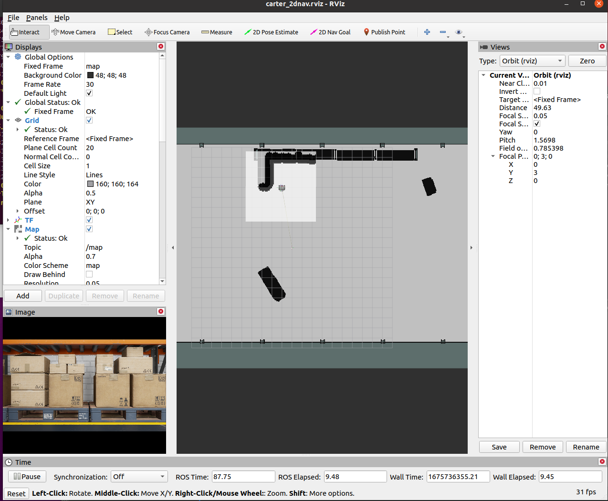
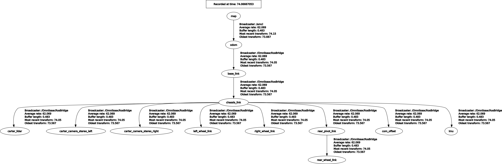

Warehouse Navigation
Warehouse Navigation example is an example provided by Nvidia that simulates Robot navigation in a factory environment.
Project Name: WareHouse Navigation Example
- Prerequisite
-
The ROS Navigation Setup
- Carter_ROS OmniGraph nodes
- Generate Occupancy Map
- Running ROS Navigation
Prerequisite
For this example we will be using ROS navigation stack which can be installed in the following way.
sudo apt-get install ros-$ROS_DISTRO-navigation
We have already downloaded and prepared necessary ROS packages which are all located in:
/home/zetabank/dev_ws/src/navigationcarter_2dnavcarter_descriptionisaac_ros_navigation_goal
Make sure roscore is operational before omniverse Isaac Sim is on.
The ROS Navigation Setup
Carter_ROS OmniGraph Nodes
In order to load the WareHouse simulation:
Go to Isaac Examples at the top of the screen
Select ROS within isaac examples
Select Navigation within ROS
This step will load in the warehouse scenario.
To ensure that the loading was successful, check the Action Graph and ROS_Camera of Carter_ROS.
From Stage, select Carter_ROS and select ActionGraph. Press
Open Graphto see the Action Graph. Modify and setup the following nodes:Omnigraph Node
Function
ros1_subscribe_twist
Subscribes to the /cmd_vel topic and triggers the differential and articulation controllers to the move the robot
ros1_publish_odometry
Publishes odometry received from the
isaac_compute_odometry_noderos1_publish_raw_transform_tree192.168.0.163:/home/zetabank/Pictures/rviz_2D_goal.png
Publishes the transform between the odom frame and base_link frame
ros1_publish_transform_tree
Publishes the static transform between the base_link frame and chassis_link frame. Keep in mind that since the target prim is set as
Carter_ROS, the entire transform tree of the Carter robot (with chassis_link as root) will be published as children of the base_link frameros1_publish_transform_tree_01
Publishes the static transform between the chassis_link frame and carter_lidar frame
ros1_publish_laser_scan
Publishes the 2D LaserScan received from the
isaac_read_lidar_beams_nodeFrom Stage, select Carter_ROS and select ROS_Camera. Press
Open Graphto see the ROS Camera Graph. Modify and setup the following nodes:Omnigraph Node
Function
ros1_create_camera_left_info
Auto-generates the CameraInfo publisher for the /camera_info_left topic. It automatically publishes since the
enable_camera_leftbranch node is enabled by defaultros1_create_camera_left_rgb
Auto-generates the RGB Image publisher for the /rgb_left topic. It automatically publishes since the
enable_camera_leftandenable_camera_left_rgbbranch nodes are enabled by defaultros1_create_camera_left_depth
Auto-generates the Depth (32FC1) Image publisher for the /depth_left topic. To start publishing, ensure
enable_camera_leftandenable_camera_left_depthbranch nodes are enabledros1_create_camera_right_info
Auto-generates the CameraInfo publisher for the /camera_info_right topic. To start publishing, ensure the
enable_camera_rightbranch node is enabledros1_create_camera_right_rgb
Auto-generates the RGB Image publisher for the /rgb_right topic. To start publishing, ensure
enable_camera_rightis enabled. Theenable_camera_right_rgbbranch node is already enabled by defaultros1_create_camera_right_depth
Auto-generates the Depth (32FC1) Image publisher for the /depth_right topic. To start publishing, ensure
enable_camera_rightandenable_camera_right_depthbranch nodes are enabledMake sure that the ROS_Clock Contains ros1_publish_clock node responsbile for piblishing the simulation time to the / clock topic.
Generate Occupancy Map
On the upper left corner of the viewport, click on Camera, and select the Top from dropdown menu:
With the
Topview angle, the workspace will look similar to a blue print of the warehouse:Open up the occupance map: Isaac Utils -> Occupancy Map. Upon opening, the occupancy map window will appear.
Set all the parameters of Origin to (
X:0.0, Y:0.0, Z:0.0).Set
Z:0.1for the Lower Bound.Set
Z:0.62for the Upper Bound. The distance is set to match the vertical distance of the lidar onboard Carter with respect to the ground.
Select the warehouse_with_forklifts prim in the stage window:
Click
BOUND SELECTION:Remove the
Carter_ROSfrom the stage.Once the
Carter_ROSis removed, click onCALCULATEfollowed byVISUALIZE IMAGE. This will promt visualization window.Within the Visualize window, rotate the image 180 degrees and select Coordinate Type as
ROS Occupancy Map Parameters File (YAML). With these settings clickRE-GENERATE IMAGE.This was done to align the ROS camera with the Isaac Sim camera, since within the simulation, their alignment is different.
After this, the YAML text will appear. Copy this text and stored it as a
carter_warehouse_navigation.yaml. Example:image: carter_warehouse_navigation.png resolution: 0.05 origin: [-11.975, -17.975, 0.0000] negate: 0 occupied_thresh: 0.65 free_thresh: 0.196
Place the
carter_warehouse_navigation.yamlfile in our project map directory. It is located in/home/zetabank/dev_ws/src/navigation/carter_2dnav/map.Open a new Terminal. (ctrl+alt+t)
Type
cd /home/zetabank/dev_ws/src/navigation/carter_2dnav/map.Type
vi carter_warehouse_navigation.yamlCopy and paste the yaml text.
Press
Escto escape the edit, and press:andwqto save the file.
Save the image as
carter_warehouse_navigation.pngand put it in the same map directory.
{kind=link}
{kind=link}
{kind=link}
{kind=link}
{kind=link}
Running ROS Navigation
Close the previous Isaac Sim window without saving, and open up a new Isaac Sim.
Go to Isaac Examples -> ROS -> Navigation to load warehouse_example.
Click Play to start the simulation.
Open a new terminal and type in
roslaunch carter_2dnav carter_navigation.launch
This will start RViz where the urdf model of the robot and the global occupancy map as well as the local costmap which will all my overlaid on top will load.
To double check if all the tranforms are broadcasting, exectue
rosrun rqt_tf_tree rqt_tf_treeto generate ROS TF frame tree:The position of the robot is predefined in carter_navigation.launch. You can manually set the position of the robot in relation to the map, you may do so with 2D Pose Estimate.
Click on
2D Nav Goaland click the desired location and drag the curser to set which direction the robot should face once it reaches the said location.
{kind=link}
{kind=link}